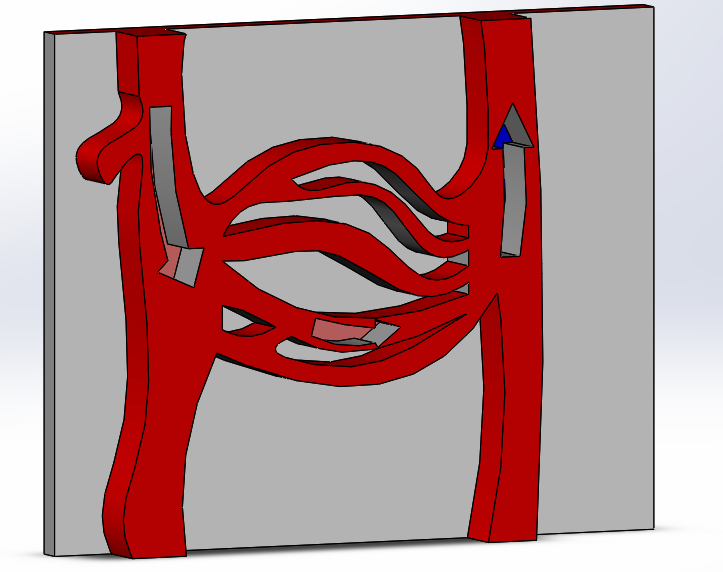
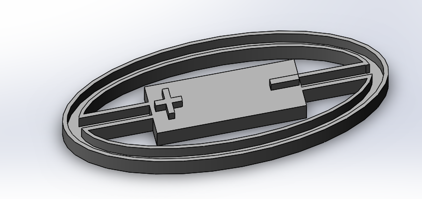

ISABELLA WATSON


"Feelin' DNA" 3D Design Portfolio
I work as a designer for the non-profit, "Feelin' DNA" at UNC. "Feelin' DNA" is predicated on the idea that blind students deserve equal access to a solid STEM education. With this non-profit, I 3D model and print scientific models for blind elementary school-aged students. Examples are listed below.With every project, I try to vary the textures of each model so they are distinguishable simply through touch. These models were designed in SolidWorks, and I am trained and certified by UNC Chapel-Hill to use a 3-D printer.

Spinal Cord Dermatome
(Sensory information coming into dorsal horn; Motor signals leaving ventral horn)

Animal Cell


Alveoli


Capillary Bed


Cell Endocytosis

Cell Exocytosis

Interactive Solar System Model (clients put pegs in that match the width of the cutouts)

Planets for Solar System Model

Interactive Magnetism Model
(slide arrow along track to demonstrate magnetic polarity)


Earth's Layers

Nucleus

Hydrogen Atom Energy Levels

Hydrogen Atom Energy Levels

Saturn